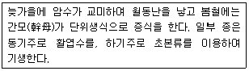

식물보호산업기사 (2006-09-10 기출문제)
1과목: 식물병리학
1. 그을음병이 식물에 미치는 영향으로 옳은 것은?
- 세포조직을 분해하여 연부를 일으킨다.
- 통도조직을 막으므로 시들음병을 유발한다.
- 조직분화가 비정상적으로 유도되어 기형이 된다.
- 기주표면을 덮으므로 광합성에 지장을 준다.
(정답률: 89%)

2. 병원균에 대한 감염 후의 저항성과 관계가 먼 것은?
- 페놀 물질
- 파이토알렉신
- 과민성 반응
- 표피세포막의 규질화
(정답률: 80%)
3. 모과나무 잎에 갈색 별무늬 모양의 원형반점이 나타나고 잎 뒷면 병반에 실 같은 털리 나오는 병은?
- 모과나무녹병
- 모과나무갈반병
- 모과나무회색곰팡이병
- 모과나무탄저병
(정답률: 58%)
4. 벼검은줄무늬 오갈병을 옮기는 곤충은?
- 진딧물
- 애멸구
- 끝동매미충
- 벼멸구
(정답률: 66%)
5. 다음 중 순활물기생자(절대기생자)는?
- 벼도열병균
- 사과탄저병균
- 배추무사마귀병균
- 딸기잿빛곰팡이병균
(정답률: 80%)
6. 배나무 붉은별무늬병의 중간기주는?
- 밀
- 향나무
- 사과나무
- 버드나무
(정답률: 94%)
7. 전신획득저항성의 설명으로 가장 적합한 것은?
- 식물체 전신이 자극을 받아서 생기는 저항성
- 식물체 전신이 획득한 특이적 저항성
- 전자신호 자극에 의하여 식물이 얻는 저항성
- 외부 자극에 의해 식물체 일부분에 유도된 저항성이 식물 전신의 말단부까지 퍼지는 것
(정답률: 75%)
8. 병징의 설명으로 틀린 것은?
- 벼도열병은 마디에 갈색 병무늬가 생기고, 검은색으로 변하면서 부러진다.
- 콩자주무늬병은 주로 종피에 자색의병무늬가 생긴다.
- 오이덩굴쪼김병은 줄기의 땅갓부분이 속에서부터 말라죽고 갈변한다.
- 배추무사마귀병은 주로 엽맥 부위에 사마귀 같은 혹을 형성한다.
(정답률: 60%)
9. 건전한 종자선택과 철저한 종자소독으로 방제할 수 있는 병은?
- 벼오갈병
- 벼흰잎마름병
- 벼잎집무늬마름병
- 세균성벼알마름병
(정답률: 58%)
10. Agrobacterium tumefaciens 에 의한 병징으로 옳은 것은?
- 잎에서 진물이 흐른다.
- 뿌리가 너덜너덜 해진다.
- 줄기가 움푹 패인다.
- 줄기와 뿌리에 혹이 생긴다.
(정답률: 76%)
11. 식물 바이러스의 특성을 설명한 것 중 틀린 것은?
- 모든 바이러스는 기생성을 갖는다.
- 인공배지에서 자란다.
- 입자는 전자현미경으로만 볼 수 있다.
- 식물에 병을 일으킬 수 있다.
(정답률: 84%)
12. 다음 중 표징이 생기는 병은?
- 대추나무빗자루병
- 감자잎말림병
- 감자걀쭉병
- 멜론균핵병
(정답률: 83%)
13. 농약이나 항생제를 사용해서 직접 병원체를 죽이지 못하는 것은?
- 파이토플라스마
- 세균
- 바이러스
- 곰팡이
(정답률: 70%)
14. 국내 파이토플라스마(Phytoplasma)의 전염방법으로 옳은 것은?
- 주로 곤충에 의해 전염된다.
- 바람에 의해 매개된다.
- 주로 즙액전염을 한다.
- 월동 후 토양전염을 한다.
(정답률: 87%)
15. 사과나무붉은별무늬병균(Gymnosporangium sp.)은 진균 중 어느 균류에 속하는가?
- 접합균류
- 불완전균류
- 자낭균류
- 담자균류
(정답률: 60%)
16. 비교적 습도가 낮은 상태에서도 많이 발생하는 병은?
- 노균병
- 흰비단병
- 흰가루병
- 균핵병
(정답률: 59%)
17. 감자역병균의 학명은?
- Phytophthora infestans
- Botrytis cinerea
- Alternaria mali
- Fusarium oxysporum
(정답률: 75%)
18. 다음 중 생물적 방제의 장점으로 옳은 것은?
- 병이 발생한 후 치료효과가 매우좋다.
- 환경보존과 지속적 농업에 잘 부합한다.
- 넓은 지역에 광범위하게 활용하기 쉽다.
- 효과가 신속하고 정확하다.
(정답률: 86%)
19. 다음 중 병징과 그 원인의 연결로 가장 거리가 먼 것은?
- 점무늬 – 병원세균의 물관부 증식
- 무름 – 펙티나아제(pectinase)생산
- 이상비대 – 식물 호르몬의 자극
- 잎마름 - 병원세균의 유관속 증식
(정답률: 63%)
20. 유관속국재성 세균이 식물에 일으키는 증상은?
- 잎 찢어짐
- 잎가주변 마름
- 잎의 혹
- 잎 떨어짐
(정답률: 78%)
2과목: 농림해충학
21. 씹는 형의 입을 가진 곤충에서 식물 조직을 잘게 부수는 역할을 하는 것은?
- 큰턱
- 작은 턱
- 아랫입술
- 윗입술
(정답률: 79%)
22. 페로몬(pheromone)의 작용이 아닌 것은?
- 곤충의 변태를 조절한다.
- 짝짓기를 위한 암수의 통신에 관여한다.
- 개미가 위협이나 상처를 받으면 분산 또는 공격을 하게 한다.
- 노린재가 포식자를 만나면 고약한 냄새로 적을 방어한다.
(정답률: 78%)
23. 유인목을 설치하여 포살할 수 있는 해충은?
- 굴벌레나방
- 박쥐나방
- 소나무좀
- 잎벌
(정답률: 70%)
24. 존스턴 기관(Johnston's organ)이 있는 곤충의 더듬이 마디는?
- 팔굽마디
- 자루마디
- 채찍마디
- 편절마디
(정답률: 78%)
25. 곤충의 유효적산온도를 구하는 공식은? (단, k : 유효적산온도, x : 발육영점온도, t : 측정온도, d : 온도 t에서의 발육일수)
- k=(t-x)d
- k=(t+x)d
- k=(t-x)/d
- k=(t+x)/d
(정답률: 72%)
26. 해충의 생물적 방제인자로서 포식성 천적류에 해당되지 않는 것은?
- 무당벌레류
- 노린재류
- 풀잠자리류
- 고치벌류
(정답률: 63%)
27. 다음 수목 해충 중 유충상태로 지피물밑이나 수피틈 또는 가지위에서 월동하는 것은?
- 매미나방(집시나방)
- 미국흰불나방
- 솔나방
- 소나무좀
(정답률: 62%)
28. 벼물바구미의 월동태는?
- 알
- 유충
- 번데기
- 성충
(정답률: 67%)
29. 곤충의 순환계에 대한 설명으로 틀린 것은?
- 곤충의 등쪽에 대동맥이 있다.
- 혈액은 혈장과 혈구세포로 이루어진다.
- 심장에는 심문이 있다.
- 곤충은 폐쇄형 순환계를 가지고 있다.
(정답률: 81%)
30. 다음 중 흡수성(흡즙성) 해충은?
- 포플러하늘소
- 미국흰불나방
- 오리나무잎벌레
- 주머니깍지벌레
(정답률: 75%)
31. 향나무하늘소(측백하늘소)의 월동태는?
- 알
- 유충
- 번데기
- 성충
(정답률: 67%)
32. 다음 곤충 중 번데기가 나용인 것은?
- 콩풍뎅이
- 풀색노린재
- 호랑나비
- 매미나방
(정답률: 62%)
33. 다음 설명에 해당되는 해충 분류는?

- 응애류
- 진딧물류
- 매미류
- 매미나방류
(정답률: 82%)
34. 분류군의 연결이 틀린 것은?
- 박각시나방– 나비목
- 벼메뚜기– 메뚜기목
- 풀잠자리- 잠자리목
- 귀뚜라미- 메뚜기목
(정답률: 68%)
35. 해충의 경제적피해수준(economic injury level)을 바르게 설명한 것은?
- 일반 환경조건하에서의 평균 밀도
- 경제적 피해를 막기 위하여 방제를 해야 하는 밀도
- 경제적 피해를 주는 최소의 밀도
- 경제적 피해액이 방제비보다 높은 밀도
(정답률: 45%)
36. 곤충의 외골격으로서의 역할보다는 수분의 증산을 억제 하는 기능이 중요한 것은?
- 외표피
- 원표피
- 진피세포
- 기저막
(정답률: 73%)
37. 다음 중 단위생식하는 종이 아닌 것은?
- 밤나무순혹벌
- 조명나방
- 무화과깍지벌레
- 복숭아혹진딧물
(정답률: 64%)
38. 다음 곤충 중 불완전변태류는?
- 풀잠자리목
- 메뚜기목
- 벌목
- 파리목
(정답률: 80%)
39. 땅강아지의 분류학적 위치는?
- 사마귀목
- 메뚜기목
- 매미목
- 노린재목
(정답률: 72%)
40. 미국흰불나방의 방제약제로 가장 효과적인 것은?
- 스미치온유제
- 디프수화제
- 다이아톤유제
- 스프라사이드
(정답률: 57%)
3과목: 농약학
41. 다음 농약 중 저항성유발 우려가 가장 놓은 약제는?
- 가스민(가스가민)
- 파라치온
- 비피(밧사)
- 석회유황합제
(정답률: 65%)
42. 다음 중 종자소독용 농약이 아닌 것은?
- 베노람 수화제
- 지오람 수화제
- 프로라츠 유제
- 훼나진 수화제
(정답률: 42%)
43. 어류에 대한 독성은 여러 가지 요인으로 감수성에 차이가 있는데 이에 대한 설명 중 틀린 것은?
- 독성은 제형에 따라 다른데 입제가 가장 강하다.
- 수온이 높으면 농약에 대한 저항성이 낮아진다.
- 어류는 알(卵)때 농약에 대하여 감수성이 가장 낮다.
- 수생 생물에 대한 독성은 잉어와 물벼룩으로 평가하는 것을 원칙으로 한다.
(정답률: 66%)
44. 45.0% 의 EPN 유제원액 100cc를 0.⑤%의 살포액으로 만들려고 할 때 소요되는 물의 양은 얼마인가? (단, EPN유제 원액의 비중은 1.0이다)
- 45,900cc
- 89,900cc
- 99,900cc
- 100,900cc
(정답률: 75%)
45. 다음 중 포유동물의 독성을 급성독성, 아급성독성, 만성독성으로 구분할 때 판단기중이 되는 것은?
- 농약의 투여방법
- 독성의 발현시기
- 독성의 정도
- 농약의 잔류 정도
(정답률: 67%)
46. 파프유제 20%를 1,000배액으로 희석하여 10a당 8말을 살포하여 해충을 방제하려 할 때 파프유제의 소요량은 몇 cc 인가? (단, 1말은 20L이다.)
- 144cc
- 150cc
- 160cc
- 169cc
(정답률: 82%)
47. 다음 벼에 사용되는 농약 중 혼용 불가능한 것은?
- 펜치온+비피
- 테람+메프
- 칼탑+다수진
- 훼나진+메프
(정답률: 35%)
48. 도열병 약제의 농약명칭을 히노산(Hinosan)으로 표기할 때 다음중 어디에 해당하는가?
- 일반명
- 품목명
- 상품명
- 시험명
(정답률: 71%)
49. 농약에서 식물생장조정제라 함은 식물의 생육을 촉진하거나 반대로 억제하여 이상 생육을 인위적으로 조절하는 제제를 말하는데 이의 작용기작에 사용되는 조절물질이 아닌 것은?
- 지베레린
- 에틸렌
- 식물영양제
- 옥신
(정답률: 80%)
50. 원제를 적당한 농도로 희석하여 분제나 수화제를 만드는데 사용되는 증량제가 아닌 것은?
- 규조토
- 벤토나이트
- 산성백토
- 젤라틴
(정답률: 68%)
51. 우리 나라 농약관리법에서 잔류성에 의한 농약의 구분에 해당하지 않는 것은?
- 작물잔류성 농약
- 토양잔류성 농약
- 수질오염성 농약
- 환경잔류성 농약
(정답률: 65%)
52. 해충의 신경자극 전달체계중 acetylcholinesterase(AchE)를 저해하여 살충작용을 나타내는 살충제 부류는?
- 유기인계
- 유기염소계
- 미생물살충제
- Derris제
(정답률: 64%)
53. 다음 중 직접살포제 농약이 아닌 것은?
- 미립제
- 세립제
- 유탁제
- 미탁제
(정답률: 61%)
54. 급성독성을 표시하는 단위는?
- LD50
- EC10
- ADI
- NOEL
(정답률: 82%)
55. 물에 녹지 않는 농약 원제에 카올린 등의 점토광물과 계면활성제, 분산제를 배합하고 혼합분쇄하여 제제화한 것은?
- 유제
- 액제
- 수용제
- 수화제
(정답률: 47%)
56. Streptomycin의 특징에 대한 설명으로 옳은 것은?
- 생물에 대한 낮은 독성으로 환경친화적인 약제이다.
- 도열병 방제에 사용되는 약제이다.
- 살균기작은 균의 미세소관 형성 기능의 저해작용이다.
- 수용액은 PH3 이하나 7이상이 되어야 생물학적인 활성이 있다.
(정답률: 58%)
57. 농약의 종류가 많은 이유에 대한 설명으로 가장 거리가 먼 내용은?
- 농작물을 가해하는 병해충 및 잡초의 종류가 많고 가해하는 특성이 다르기 때문에 농약이 많이 개발되고 있다.
- 같은 농약의 계속 사용으로 농약에 대한 저항성이 발생 하기 때문에 농약이 많이 개발되고 있다.
- 제조회사에서 가경이 저렴한 농약 및 환경친화형 농약만 개발하기 때문에 농약이 많이 개발되고 있다.
- 농민들이 사용하기 편리하고 농작물의 생육시기나 재배방법에 적합한 형태의 농약이 필요하기 때문에 농약이 많이 개발되고 있다.
(정답률: 89%)
58. 다음 농약의 분류 중 사용목적에 따는 분류에 해당하지 않는 것은?
- 식독제
- 접촉독제
- 유인제
- 유기인계
(정답률: 82%)
59. 약제 저항성 해충의 효과적은 방제 방법이 아닌 것은?
- 교체 살비제의 합리적 사용
- 혼합제의 상승효과 이용
- 해충종합방제법에 의한 농약사용
- 잔효성이 긴 살충제 사용
(정답률: 84%)
60. 다음 중 급성적 약해 증상이 아닌 것은?
- 발근불량
- 위조현상
- 화아형성저해
- 낙엽 및 낙과
(정답률: 53%)
4과목: 잡초방제학
61. 다음 중 주로 논에 발생하는 다년생 잡초는?
- 가래
- 알방동사니
- 바람하늘지기
- 민바랭이
(정답률: 63%)
62. 화본과 잡초로서 피 종류의 하나인 돌피의 학명은?
- Echinochloa crus-galli
- Cyperus difformis
- Monochoria vaginalis
- Leersia japonica
(정답률: 57%)
63. 저항성 잡초의 출현을 방지하기 위한 대책 중 틀린 것은?
- 저항성 작물의 개체군을 개발한다.
- 제초제 특성에 따라 순환적용한다.
- 제초제는 단용보다는 혼용하도록 한다.
- 직파재배를 한다.
(정답률: 79%)
64. 잡초 방제상 가장 중요한 분류 방법은?
- 잡초의 생육시기와 생활환에 의한 분류
- 방제대상 경지에 의한 분류
- 형태적 특성에 의한 분류
- 잡초 발생량과 분포에 의한 분류
(정답률: 71%)
65. 작물과 잡초간의 경합에 관여하는 3대 제한요인이 아닌 것은?
- 무기양분
- 광
- 수분
- 산소
(정답률: 78%)
66. 제초제의 선택성과 관력이 적은 것은?
- 선별 대사
- 선별 흡수
- 선별 광합성
- 선별 이행
(정답률: 75%)
67. 다음 잡초 중 출현심도가 가장 깊은 것은?
- 메귀리
- 별꽃
- 냉이
- 명아주
(정답률: 32%)
68. 맥류의 잡초방제의 특성으로 틀린 것은?
- 월동 작물 재배시 봄에 발아하는 잡초보다 월동형 잡초의 피해가 크다.
- 잡초에 대한 경합력은 보리가 밀보다 강하나, 제초제에 대한 저항성은 밀이 보리보다 강하다.
- 제초제의 사용은 유수형성기 전에 이루어져야한다.
- 맥류의 엽수가 5매 이상이 되면 제초제에 대한 저항성이 감소하게 된다.
(정답률: 54%)
69. 잡초 종자가 새로운 지역으로 확산되기 위한 전파 기능 중 종실에 가시나 갈고리 모양의 돌기가 있어 인축에 부착되어 전파되는 초종으로만 되어 있는 것은?
- 민들레, 쇠비름
- 까마중, 가는 털비름
- 소리쟁이, 좀명아주
- 도깨비바늘, 도꼬마리
(정답률: 88%)
70. 6% 유효성분을 가진 마세트를 10a당 3kg(제품량)을 논에 처리시 10a의 논에 처리한 유효성분 함량은 얼마인가?
- 60g
- 600g
- 18g
- 180g
(정답률: 46%)
71. 채소밭의 잡초방제에 대한 설명으로 옳은 것은?
- 노지재배의 경우는 생육 후기에 중점적으로 잡초 방제를 실시한다.
- 시설원예의 경우에는 소수의 잡초가 대형화할 수 있으므로 완벽한 제초를 해주어야 한다.
- 흑색의 불투명한 필름으로 멀칭할 경우 백색의 투명한 필름보다 잡초 발생이 많아진다.
- 비닐 터널 재배는 고온다습하므로 잡초 발생이 경감된다.
(정답률: 81%)
72. 화학구조가 다른 계통에 속하는 제초제는?
- Alachlor
- 2,4-D
- Mecoprop
- MCPA
(정답률: 61%)
73. 비농경지에 사용하고 있는 파라코액제(그라목손)제초제에 대한 설명 중 틀린 것은?
- 비선택성 제초제
- 경엽처리형 제초제
- 접촉형 제초제
- 이행형 제초제
(정답률: 55%)
74. 잡초 종자의 휴면 중 종피에 기인된 휴면 원인이 아닌 것은?
- 투수성을 억제
- 발육이 불완전하거나 미숙한 배(胚)
- 공기의 투과를 억제
- 배(胚)가 돌출하는데 기계적 장해 유발
(정답률: 64%)
75. 잡초 유묘의 출현에 관여하지 않는 요인은?
- 토양심도
- 토양온도
- 토양수분
- 토양 미생물
(정답률: 67%)
76. 단일조건에서 발아율이 증가하는 잡초는?
- 바랭이
- 향부자
- 메귀리
- 냉이
(정답률: 62%)
77. 제초제의 화학구조에 따는 분류 중에서 –NH-CO-NH- 또는 (NH)2CO의 구조를 기본구조로 가지고 있고, 대표적으로 monuron, linuron, diuron 등이 포함되는 계열의 제초제는?
- Triazine계 제초제
- Pyridine계 제초제
- Urea 계 제초제
- Uracil계 제초제
(정답률: 73%)
78. 최근 우리나라 논에 다년생 잡초가 증가하는 요인으로 볼 수 없는 것은?
- 1년생 제초제의 연용
- 만기 이앙 및 답리작의 증가
- 추경 및 춘경의 감소
- 물관리의 변도
(정답률: 68%)
79. 잡초 종자의 발아습성에 대한 설명으로 틀린 것은?
- 발아계절성이란 잡초가 발생 계절의 일장보다 대기온도에 반응하여 휴면이 타파되고 발아하는 것을 말한다.
- 발아주기성이란 같은 조건에 두어도 일정한 간격을 보이며 최고의 발아율을 나타내는 것을 말한다.
- 일정기간 이내에 대부분의 종자가 발아를 마치는 집중발아형을 준동시성 발아형이라고 한다.
- 발아에 적합한 조건을 주어도 오랜기간에 걸쳐 지속적으로 발아하는 유형을 연속성 발아형이라고 한다.
(정답률: 68%)
80. 광엽 월년생잡초가 아닌 것은?
- 별꽃
- 벼룩나물
- 갈퀴덩굴
- 반하
(정답률: 58%)